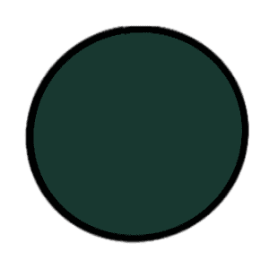
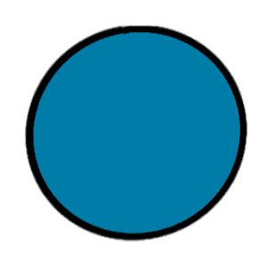
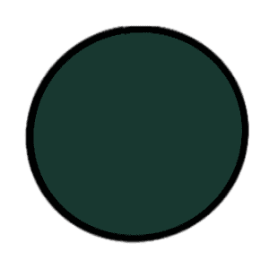
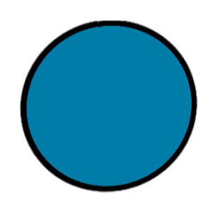

Main Heading
TITLES
Title Descriptions
Colour Scheme
 




I decided to use this colour scheme consisting mainly of blues and light greens because it went well with the Studio Ghibli background I had chosen. I chose the API and theme, 'Studio Ghibli Movies' because I thought it would be easy to make a beautiful yet informative website. In future development, the background image (and sound design) will be dependent on which movie the user wants to learn more about. In reponse to the user's selection, the data visualisation and data art page's will display the appropriate information with the corresponding aesthetic.
On most pages, I went with a double column layout. As it allowed me to display an image/visualisation on one side and then it explain it in detail on the next side. I also think dividing up large chunks of information into two columns makes it easier for readers to skim through the text to find the essays they actually want to engage with.
I chose the font, 'Tahoma' as my main font as it is a sans serif font which makes it easier to read. The font I used for main headings, is one I imported from google fonts, it's called 'Coda_Caption'. It is also a sans serif font and has quite a heavy font weight which draws the readers' attention instantly. This makes it easier to sort information in a hierarchy as the 'Tahoma' font has quite a light font weight in comparison.
Previous Top